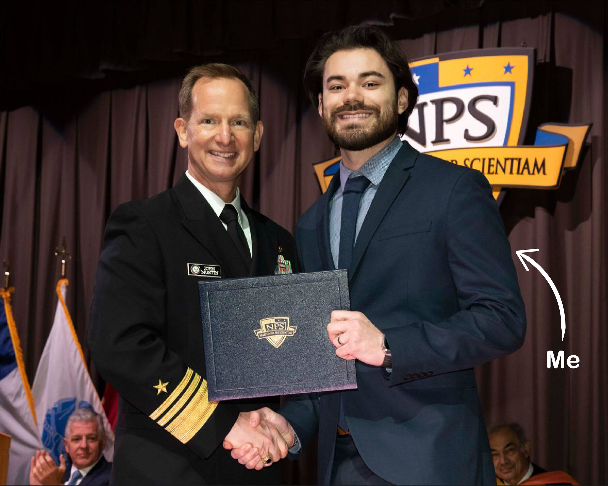
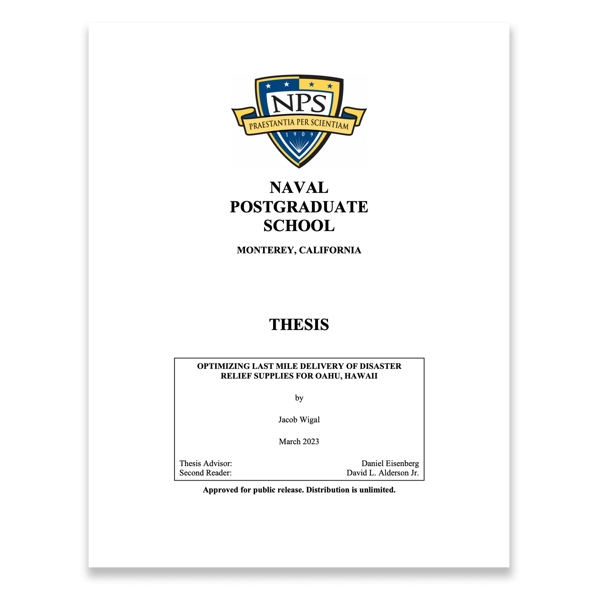

Hi, I'm Jake.
I am a Master of Science in Operations Research with a background in software engineering, geospatial data, and machine learning.
Education
Naval Postgraduate School
M.S. Operations Research,
Certificate in Operational Data Science and Statistical Machine Learning
2020 – 2023
University of Texas at Austin
B.A. Urban Studies
2015 – 2019

Publications
Optimizing Last Mile Delivery of Emergency Supplies for Oahu, Hawaii (2023)
Developed congestion-based traffic assignment and capacitated vehicle routing problem models to find optimal points of distribution for emergency supplies.

Cellular Coverage Mapping in the U.S. Virgin Islands (2023)
Implemented a physics-based cellular coverage model for the U.S. Virgin Islands to identify vulnerable critical facilities and optimal sites for future investment.
Projects
QuarkIQL - Computer Vision API Testing Platform
Full stack web app created using React, AWS (RDB, CodeDeploy, EC2, S3) and Tailwind CSS.
MLB Daily - Frontend UI for Sports APIs
Custom CSS and JavaScript frontend running on Flask backend and deployed on AWS EC2.
COVID-19 Case Rates Data Analysis and Visualization
Data analysis and visualization using Pandas, SciPy, Plotly, and Leaflet.